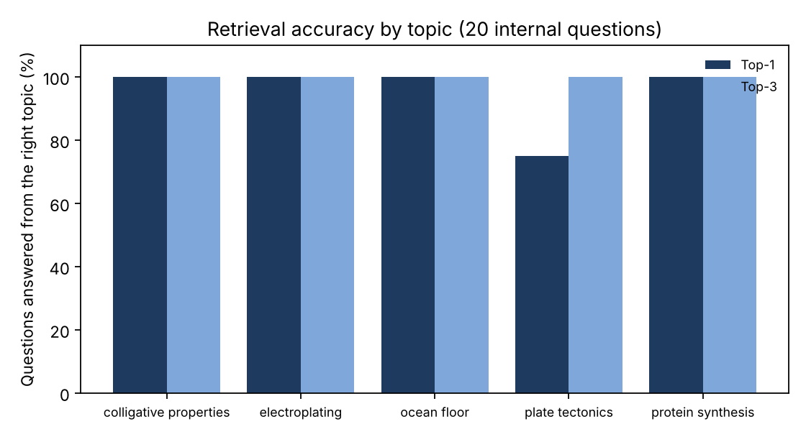

Science Study Assistant: an AI tutor that would rather say "I don't know" than guess
Students ask follow-up questions after class, and general chatbots answer them confidently — sometimes wrongly. Teachers have no control over what students are told. This prototype tests a narrower bet: answer only from teacher-approved notes, show the source, and refuse when the notes don't cover it.
The product bet
Users
Grades 8–12 students revising; science teachers who want answers consistent with their curriculum.
Principle
A wrong-but-confident answer is worse than a refusal. v1 deliberately favours refusing.
North-star + counter-metric
Helpful answers per session; counter-metric: wrong-but-confident answers, reviewed by a teacher.
Teacher control
Teachers add or edit a topic by editing a markdown file — no code, no retraining.
Try it
This is the same TF-IDF retriever and 0.15 relevance threshold as src/tutor, running in your browser over the 22 note sections in data/kb/. Try an off-topic question to see the refusal.
Evaluation

Honest caveat: the 20 eval questions and the notes were written by the same author, so this is a smoke test, not a benchmark. The PRD's launch plan replaces it with questions collected from real students.
Decisions and trade-offs
- Extractive by default, LLM optional: safer and free; the LLM mode only sees retrieved passages and falls back to extractive on any error.
- TF-IDF before embeddings: no network, explainable to a teacher. Revisit once the eval set is big enough to show paraphrase failures.
- Refusal threshold: too high frustrates students, too low lets off-topic answers through — tuned against the counter-metric.
Next
- Interview 5+ teachers and 5+ students using the interview guide.
- Teacher review of the notes; two-week pilot with one class.
- Go/no-go on the PRD metrics.